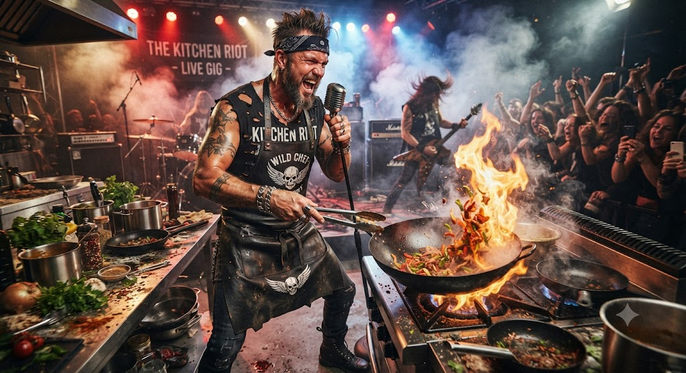
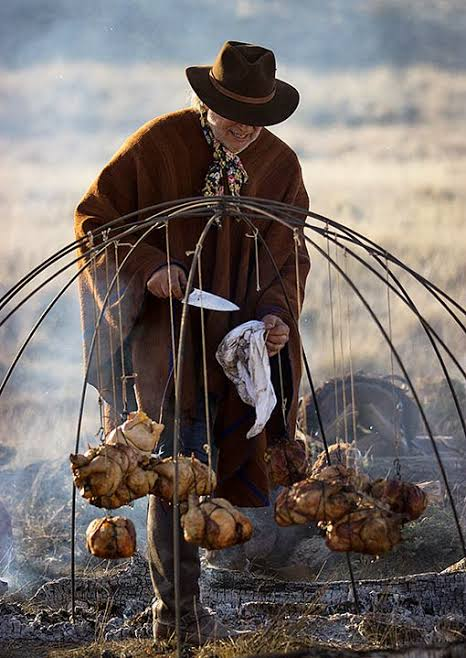
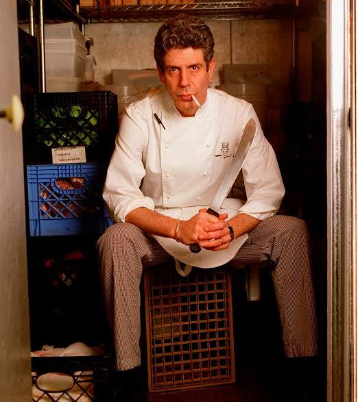
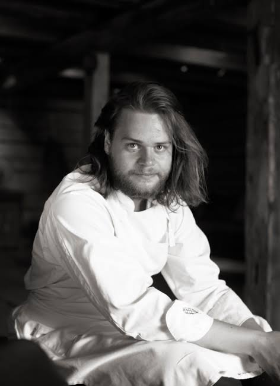
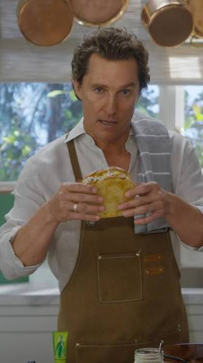
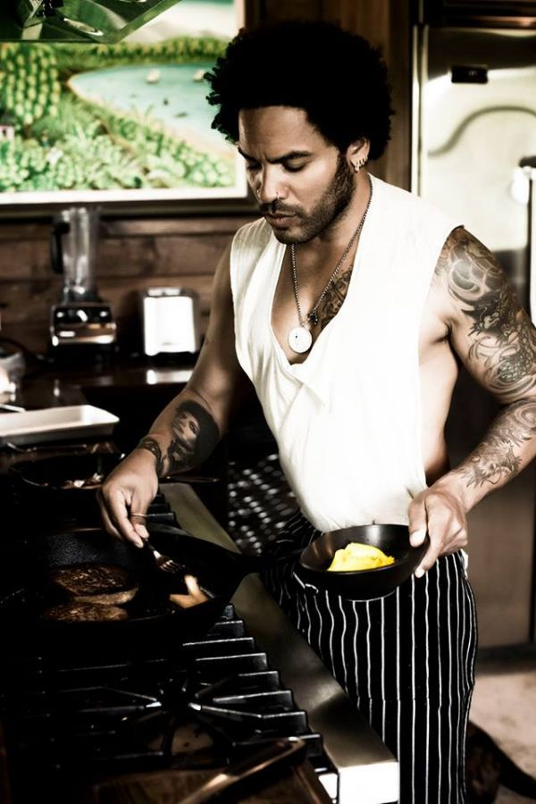
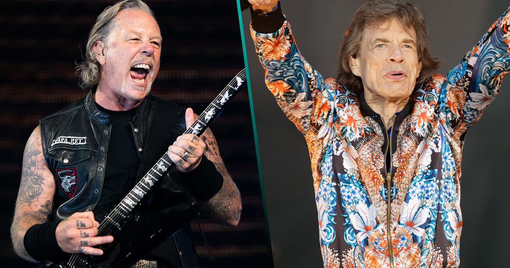

¡Fuego, Rock y Raíces!

Rockstar Chefs
Francis Mallmann y la "Arquitectura del Fuego":
El chef argentino que abandonó las estrellas Michelin y el refinamiento de la alta cocina francesa para redescubrir las técnicas de los gauchos. Mallmann se convirtió en un ícono al cocinar solo con leña, cenizas y hornos de barro en locaciones remotas de la Patagonia, elevando la simplicidad del fuego a una forma de arte crudo y performático.

Anthony Bourdain y la "Cocina sin Filtros":

Más que un chef, fue el primer verdadero rockstar de la gastronomía. Bourdain dejó las cocinas de Nueva York para recorrer el mundo buscando la autenticidad en puestos de comida callejera y fogatas rurales. Su actitud desafiante contra la pretensión gastronómica validó la idea de que la mejor comida no es la más cara, sino la que tiene una historia visceral detrás.
Magnus Nilsson y el "Salvaje Norte":
En su restaurante Fäviken, ubicado en una remota zona de Suecia, Nilsson redefinió la cocina de vanguardia alejándose de las ciudades. Se dedicó a cazar, pescar y recolectar ingredientes en un entorno hostil y salvaje, aplicando un rigor científico a métodos de conservación ancestrales, demostrando que el verdadero lujo es el producto puro que sale de la tierra sin intervención industrial.

El Menú de la Gira en el Campo
El "Rancho Retreat" de Matthew McConaughey:
En su rancho en Texas, McConaughey es conocido por preferir una cocina comunitaria y profundamente vinculada al terreno. Su menú favorito incluye brisket ahumado durante 14 horas con leña de mezquite, acompañado de beans cocinados lentamente en ollas de hierro fundido sobre el fuego y pan de maíz casero, un festín que celebra la cultura del barbecue texano en su estado más puro.

El "Zen Oasis" de Lenny Kravitz en Brasil:

En su granja en el interior de Brasil, Kravitz cultiva su propia comida. Su estilo se aleja de los excesos de la gira y se centra en ingredientes orgánicos: pescado fresco envuelto en hojas de banano con hierbas locales, ensaladas de frutas exóticas recién cortadas y jugos naturales de la huerta, reflejando su estilo de vida conectado con la naturaleza y la paz espiritual.
Los "Riders" Legendarios de las Bandas de Rock:
En contraste con el campo, los riders (lista de exigencias en camerinos) de bandas como The Rolling Stones o Metallica suelen incluir platillos de "confort food" para recuperar energías tras el despliegue físico del escenario. Son clásicos pasteles de carne (shepherd's pie), bandejas de cortes de carne de alta calidad para asar rápidamente, y una selección de quesos artesanales que los músicos consumen como si fuera un ritual de supervivencia post-show.
